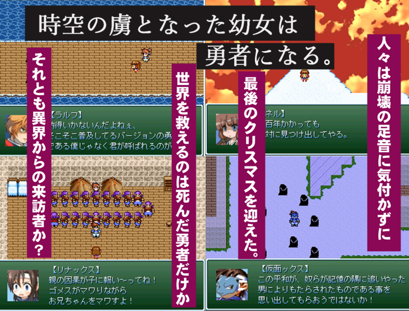

| No.39 アレックスが死んだ。 |
 |
|
| 作者：さいてん | |
| ツクール：2000 | |
| ジャンル：滑ってる系やるゲ | |
| 配信/投稿：自己責任 | |
| 作者コメント： はじめまして。３０分程度の短編を予定してます。 デフォ素材でマップ作ってて「やっぱデフォだとつまんない景色になっちゃうな」 とか思ってたんですけど皆さんがデフォ素材で作った作品やってみると単に私のセンスが無かっただけと わかり絶望してモチベなくしてエターの危機に陥りました。 でっかく裏シナリオとかのせてますけどまず表からし て完成しそうにないです。 ミニゲームだけばっちり完成してるので間に合いそうになかったらたぶんミニゲームだけ提出します。 ・・・・・・・・・・・・・・・・・・・・・・ ＳＳ「わてりが死んだ。」追加。 【おまけＳＳ】のセーブデータをロードしてください。 ・・・・・・・・・・・・・・・・・・・・・・ |
|
| 管理人コメント： 仮面ックスの出オチっぷりがひどいｗｗｗｗｗ |
|
| ダウンロード(7.9MB) / 感想掲示板 | |
| 前の作品 / 次の作品 / TOPへ戻る | |